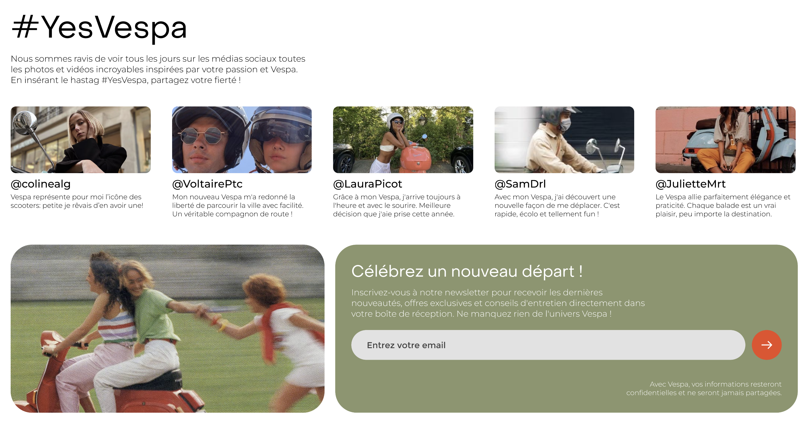

←
Accueil
|
Vespa Primavera
0%
Création d'un site vitrine / one page pour le lancement de la nouvelle gamme de Vespa, Primavera Electrica
Votre navigateur ne supporte pas la balise vidéo.
Votre navigateur ne supporte pas la balise vidéo.

À bientôt !